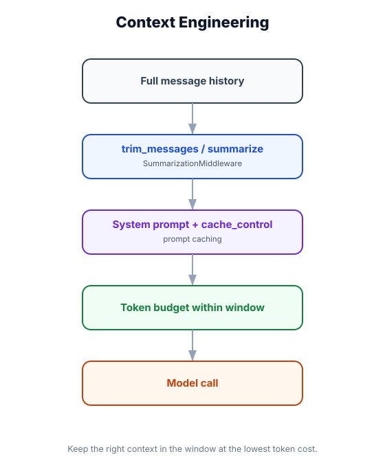

Context Engineering
What you'll learn: How to deliberately design the model's context window — what goes in, in what order, and how much. Practical patterns for system prompts, injecting memory, message trimming, and the few-shot technique to steer model behavior.

↗ Open full size · ⬇ Edit in Excalidraw — labels use real LangChain classes.
A model processes everything in its context window like a consultant reading a briefing packet before a meeting. Context engineering is writing that packet deliberately — what goes on page 1 (system prompt), what's the background (memory facts), what's the recent history, and what's the actual question (current message). A poorly assembled packet leads to confused advice. A well-assembled one leads to razor-sharp answers.
What Is the Context Window?
Every model call sends a list of messages. The model only "knows" what's in that list — nothing else. Context engineering is the practice of deliberately assembling that list to maximize the quality of the model's response.
Pattern 1: Dynamic System Prompts
Static system prompts can't adapt to the user or session. Use @dynamic_prompt middleware to build the system prompt from live data each turn.
from langchain.agents import create_agent
from langchain.chat_models import init_chat_model
from langchain.agents.middleware import AgentMiddleware
from langchain.agents.middleware import dynamic_prompt
from langgraph.store.memory import InMemoryStore
from datetime import datetime
class ContextEngineeringMiddleware(AgentMiddleware):
@dynamic_prompt
async def build_system_prompt(self, state, context) -> str:
user_id = context.get("user_id", "anonymous")
# ── Pull from long-term store ──────────────────────────────────────────
profile_item = await self._store.aget(
namespace=("users", user_id), key="profile"
)
profile = profile_item.value if profile_item else {}
# ── Pull recent facts ──────────────────────────────────────────────────
fact_items = await self._store.asearch(namespace=("facts", user_id))
facts = [item.value.get("fact", "") for item in fact_items[:5]] # top 5
# ── Build structured system prompt ─────────────────────────────────────
name = profile.get("name", "the user")
lang = profile.get("preferred_language", "English")
now = datetime.utcnow().strftime("%Y-%m-%d %H:%M UTC")
sections = [
f"You are a personal AI assistant.",
f"Current date/time: {now}",
f"Respond in: {lang}",
]
if profile:
sections.append(f"You are helping: {name}")
if facts:
sections.append("What you remember about this user:")
for f in facts:
sections.append(f" - {f}")
sections.append("Be concise and helpful. If you don't know something, say so.")
return "\n".join(sections)
store = InMemoryStore()
# Pre-populate some user data
store.put(("users", "alice"), "profile", {"name": "Alice", "preferred_language": "English"})
store.put(("facts", "alice"), "city", {"fact": "lives in Paris"})
store.put(("facts", "alice"), "job", {"fact": "works as a UX designer"})
agent = create_agent(
model=init_chat_model("openai:gpt-4o-mini"),
tools=[],
store=store,
middleware=[ContextEngineeringMiddleware()],
)Pattern 2: Message Trimming
Long conversations overflow the context window. trim_messages() keeps the most recent and most relevant messages while staying within token limits.
from langchain_core.messages import trim_messages, SystemMessage, HumanMessage, AIMessage
# ── Basic trimming — keep last N tokens ───────────────────────────────────────
messages = [
SystemMessage("You are helpful."),
HumanMessage("Hello"),
AIMessage("Hi there!"),
# ... many more messages ...
HumanMessage("What did I say earlier about Python?"),
]
trimmed = trim_messages(
messages,
max_tokens=4000, # stay within this limit
token_counter=len, # use your model's tokenizer here
strategy="last", # keep the LAST N tokens (most recent messages)
start_on="human", # always start with a HumanMessage (model constraint)
include_system=True, # always keep the SystemMessage (even if old)
allow_partial=False, # never split a message mid-way
)
# ── Filter messages by type ────────────────────────────────────────────────────
from langchain_core.messages import filter_messages, ToolMessage
# Remove all tool messages from history (reduce noise for summarization)
clean_messages = filter_messages(
messages,
exclude_types=[ToolMessage],
)
# Keep only the last 3 human/AI turns (no tool messages)
from langchain_core.messages import filter_messages
recent = filter_messages(messages, include_types=["human", "ai"])[-6:] # 3 turns × 2
# ── Use trimming in a before_model middleware hook ─────────────────────────────
from langchain.agents.middleware import AgentMiddleware
from langchain.agents.middleware import before_model
class TrimMiddleware(AgentMiddleware):
def __init__(self, max_tokens: int = 6000):
self.max_tokens = max_tokens
@before_model
def trim_context(self, messages):
return trim_messages(
messages,
max_tokens=self.max_tokens,
token_counter=len, # replace with tiktoken for accuracy
strategy="last",
start_on="human",
include_system=True,
)Pattern 3: Few-Shot Examples
Few-shot prompting gives the model 2–5 input/output examples to steer its style, format, and reasoning. It's one of the most reliable ways to get consistent output.
from langchain_core.messages import HumanMessage, AIMessage, SystemMessage
from langchain.agents import create_agent
from langchain.chat_models import init_chat_model
# ── Build few-shot examples as message pairs ───────────────────────────────────
FEW_SHOT_EXAMPLES = [
HumanMessage("Classify: 'My order never arrived and support ignored me!'"),
AIMessage('{"category": "shipping", "sentiment": "negative", "urgency": "high", "summary": "Customer had a delivery failure and poor support experience."}'),
HumanMessage("Classify: 'Just checking my order status, thanks!'"),
AIMessage('{"category": "order_status", "sentiment": "neutral", "urgency": "low", "summary": "Routine order inquiry."}'),
HumanMessage("Classify: 'I love your product! Can I order more?'"),
AIMessage('{"category": "reorder", "sentiment": "positive", "urgency": "low", "summary": "Satisfied customer wants to purchase again."}'),
]
# ── Inject examples into the conversation using before_model middleware ─────────
from langchain.agents.middleware import AgentMiddleware
from langchain.agents.middleware import before_model
class FewShotMiddleware(AgentMiddleware):
"""Injects few-shot examples after the system message."""
def __init__(self, examples: list):
self.examples = examples
@before_model
def inject_examples(self, messages):
# Find the system message
system_msgs = [m for m in messages if m.type == "system"]
other_msgs = [m for m in messages if m.type != "system"]
# Rebuild: system → examples → actual conversation
return system_msgs + self.examples + other_msgs
agent = create_agent(
model=init_chat_model("openai:gpt-4o-mini", temperature=0),
tools=[],
system_prompt=(
"You are a customer support classifier. "
"Always respond with valid JSON matching: "
"{category, sentiment, urgency, summary}. "
"No other text."
),
middleware=[FewShotMiddleware(FEW_SHOT_EXAMPLES)],
)
result = agent.invoke({
"messages": [HumanMessage("Classify: 'When will my refund be processed?'")]
})
print(result["messages"][-1].content)
# {"category": "refund", "sentiment": "neutral", "urgency": "medium", "summary": "..."}Pattern 4: Injecting RAG Results into Context
Retrieved documents should be inserted at the right point in the context — after the system prompt but before conversation history — so the model reads them as background knowledge, not as part of the chat.
from langchain_core.messages import SystemMessage, HumanMessage
from langchain.agents.middleware import AgentMiddleware
from langchain.agents.middleware import before_model
class RAGInjectionMiddleware(AgentMiddleware):
"""Retrieves relevant docs and injects them as context before the model call."""
def __init__(self, retriever):
self.retriever = retriever
@before_model
async def inject_documents(self, messages):
# Get the latest human message as the query
human_msgs = [m for m in messages if m.type == "human"]
if not human_msgs:
return messages
query = human_msgs[-1].content
docs = await self.retriever.ainvoke(query)
if not docs:
return messages
# Format docs as a context block
context_text = "\n\n".join(
f"[Document {i+1}]\n{doc.page_content}"
for i, doc in enumerate(docs[:3]) # top 3 docs
)
context_msg = SystemMessage(
f"Relevant context (use this to answer the user):\n\n{context_text}\n\n"
f"--- End of context ---"
)
# Insert after the main system message, before conversation history
sys_msgs = [m for m in messages if m.type == "system"]
other_msgs = [m for m in messages if m.type != "system"]
return sys_msgs + [context_msg] + other_msgsResearch shows models pay less attention to information placed in the middle of a long context. The most reliably attended positions are the beginning (system prompt) and the end (the current message). Put critical instructions in the system prompt, not buried mid-conversation. When injecting documents, put the most relevant one first and consider repeating the key instruction at the end: "Based on the documents above, answer: [user question]."
Real-World Use Case
⚖️ Legal Research Assistant
A legal research agent uses four context layers: (1) a system prompt specifying jurisdiction and practice area; (2) a fact-injected section with the current case's key parties and claims (from the store); (3) retrieved case law snippets from a vector database (injected by RAGInjectionMiddleware); (4) the lawyer's current question. Each layer is carefully ordered. Case law goes between the system prompt and conversation history so it reads as authoritative background, not as conversational turn-taking. Few-shot examples teach the model the firm's citation style ("See Smith v. Jones, 2019 WL 12345 (S.D.N.Y.)") without requiring a fine-tuned model.
Context window = system prompt + injected memory + conversation history + current message. Use @dynamic_prompt to build the system prompt from live data. Use trim_messages() to stay within token limits. Few-shot examples steer output format reliably. Inject RAG results between system prompt and history. Critical information goes at the beginning or end — not buried in the middle.